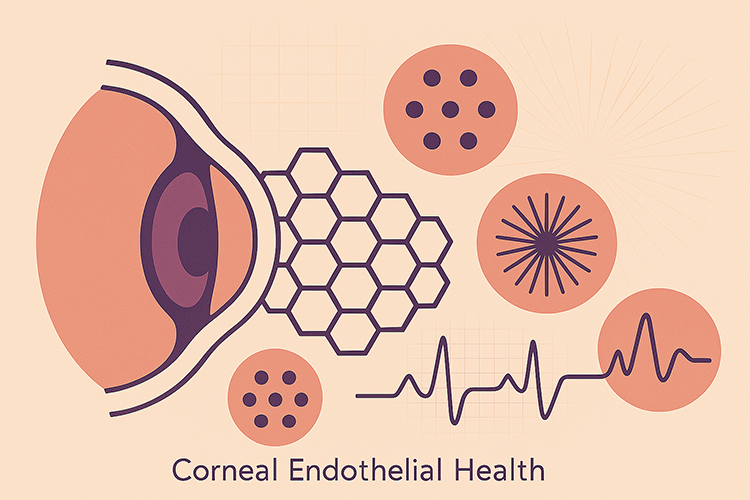
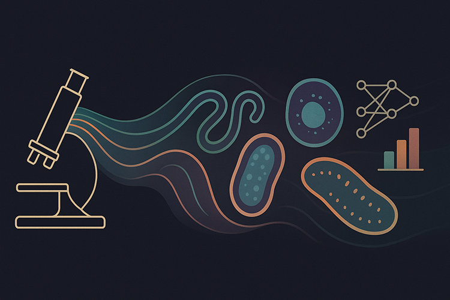

Ranit Karmakar, PhD
Researcher | Innovator | Entrepreneur
Harvard University
Boston, MA
Experienced researcher and builder with a PhD in Medical AI. From scaling automation in industry to leading research and strategy at Harvard, I specialize in applied ML, innovation leadership, and translating research into real-world outcomes.
Interests
Machine Learning Artificial Intelligence Bioimage Analysis Medical AI Computer Vision Large Language Models AI Strategy
Get in Touch
Research Interest
My research sits at the intersection of artificial intelligence and healthcare, driven by a deep passion for creating real-world impact through practical innovation. I focus on developing efficient and scalable AI solutions for biomedical image analysis, with a special interest in edge AI and its potential to bring advanced diagnostic tools closer to the point of care.
A major area of my work has been in corneal endothelial tissue evaluation, where I’ve built both classical image processing pipelines and efficient deep learning models like Mobile-CellNet to automate the segmentation of endothelial cells. These tools help assess tissue quality for corneal transplants, reducing observer bias and increasing throughput in clinical workflows. I’ve also led large-scale studies examining how health and lifestyle factors—such as alcohol abuse and previous cataract surgery—affect endothelial cell health, with findings featured in Ophthalmology Times.
Beyond ophthalmology, I’ve contributed to projects in brain tumor segmentation, kidney tissue analysis using NoRI imaging, and cellular aging classification. My broader interest in bioimage analysis has guided the development of robust tools that integrate deep learning with microscopy data, deployed across shared HPC infrastructure to make these models more accessible to the research community.
Looking ahead, I am excited about advancing AI models that are not only accurate but also lightweight and deployable in resource-constrained settings. I believe edge AI holds transformative potential for global health—enabling real-time, offline diagnostics in clinics, rural hospitals, and beyond.
Learn More about my work in:
AI in Healthcare
Corneal Endothelial Tissue Evaluation
Assessing the quality of the corneal endothelium is critical for diagnosing and managing various ocular conditions, as well as for evaluating donor tissue suitability in corneal transplantation. Accurate analysis of endothelial cell density, morphology, and integrity plays a key role in clinical decision-making. Manual assessment, however, is time-consuming and subject to inter-observer variability. Automated image segmentation offers a scalable and objective solution, enabling consistent and high-throughput analysis of endothelial images. Our research addresses this need by developing robust, automated segmentation methods tailored to the unique challenges of corneal endothelium imaging.
Effects of Social and Health Factors on Corneal Health
In this research, we explored how systemic conditions and lifestyle factors affect corneal endothelial health. Using large eye bank datasets, I’ve shown that alcohol and drug abuse, as well as prior cataract surgery, are significantly associated with reduced endothelial cell density and altered morphology, while diabetes and hypertension have no measurable effect. I also evaluated corneal storage media, finding comparable efficacy with subtle differences that may inform future practice. This work helps refine donor screening and improve outcomes in corneal transplantation.
Our ground-breaking findings got featured by Ophthalmology Times.
Alcohol Abuse and Corneal Health
Large-scale study to measure the effect of alcohol abuse on corneal health.
Read moreStorage Solution and Corneal Health
Retrospective study to measure if different storage sollution affects corneal endothelial health.
Read moreDrug Use and Endothelial Health
Measuring effects of diabetes mellitus, hypertension, alcohol and drug abuse, along side cataract surgery on corneal health.
Read moreBioimage Analysis
AI, Tools and Bioimage Analysis
I'm broadly interested in bioimage analysis as a powerful interface between biology, microscopy, and machine learning. My work spans the development of advanced segmentation and classification tools for diverse biological imaging challenges—from quantifying protein and lipid content in kidney tissue using NoRI, to classifying cellular aging with deep learning, and analyzing time-lapse microscopy to track cell cycle stages. I also focus on making cutting-edge analysis tools more accessible by deploying deep learning frameworks and open-source software on shared computing platforms. Across these projects, I integrate skills in image processing, computational modeling, and software deployment to extract meaningful, quantitative insights from complex biological data.
Kidney Tissue Characterization Using NoRI
Develop fast and robust image analysis pipeline to analyze NoRI kidney images.
Read moreVisual-Age Scoring using Deep Learning
To develop advanced deep learning models capable of classifying aged (senescent) and youthful (young) cells.
Read moreBioimage Analysis Infrastructure on HPC
To make bioimage analysis tools and deep learning models more accessible by deploying them on HMS's local HPC.
Read moreClassification of Cell Cycles of FUCCI Cells
Classify cell states (mitosis and interphase) using 2D time-lapse imaging data, integrating advanced segmentation and tracking techniques.
Read more